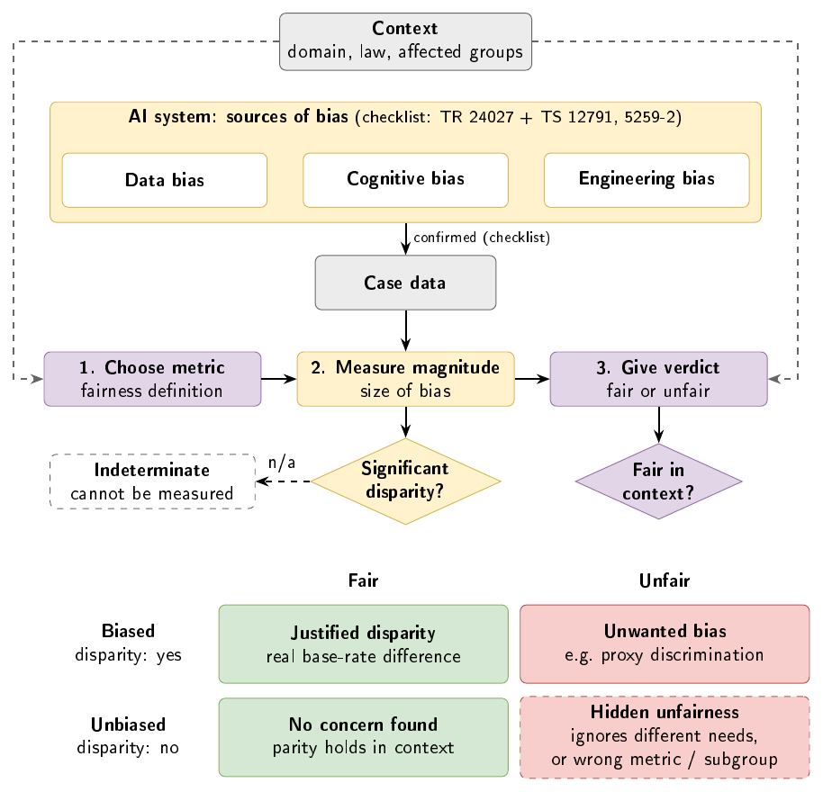

Fairness is the most under-addressed dimension in AI development
Multiple lines of evidence converge on the same finding: fairness is consistently deprioritised across the AI development lifecycle — by practitioners, by researchers, and by the systems they build.
"Closing the fairness gap requires shared infrastructure — standardised metrics, open tooling, and domain events for bias detection — rather than guidance targeted at only one side of the API contract." [4]
At the user level, developers assume users want personalisation and adaptive features — but students prioritise basic feedback quality (75.4%) over personalisation (35.1%). That 40.3 percentage-point difference reveals how deeply developer assumptions diverge from actual user priorities when fairness is never made explicit. [1][2]
Given we know bias exists and practitioners ignore it — how do you actually detect it systematically?
Two approaches exist. Only one is feasible without full clinical data access:
Not used Technical detection
Automated metric computation applied to a deployed model. Requires independently validated clinical labels and subgroup data. Ground truth is not available in the CareMove/Gymbot dataset.
This toolkit Process/audit framework
A structured checklist guiding teams through ISO 24027 clause-by-clause. Works at requirements and design stage. No clinical labels needed for the checklist. Proxy metrics extend this using available Gymbot data.
ISO/IEC 24027:2021 — three clause groups → three checklists → five metrics
ISO/IEC TR 24027:2021 defines bias and fairness for AI systems across three domains. This toolkit operationalises those clauses into a four-step auditable workflow that keeps measurement (magnitude) separate from judgement (verdict).

§6.3.10 and §7.7 excluded — content paywalled. §5.2–5.3 used as conceptual framing only.
Why a proxy approach — and what it means for results
The CareMove/Gymbot dataset records AI scores and user exercise behaviour but contains no PT-assessed clinical risk labels. Without ground truth, four of the five metrics cannot be computed directly. Only §7.5 demographic parity is fully computable from raw data.
To provide directional findings for all five metrics, this toolkit uses a researcher-constructed proxy label derived from TILDA (Irish Longitudinal Study on Ageing) fall prediction findings:
Proxy ground truth rule
model_flag = 1 IF gymbot_score < SCORE_THRESHOLD
Thresholds are set and locked in the Metric plan. Default: age ≥ 65 (WHO elderly), bodyRatio < 0.6 (below 60% movement quality, analogous to below-threshold grip strength in TILDA), gymbot_score < 60.
The proxy is a placeholder for ground truth. When validated labels become available (for example PT-assessed risk, minimum 30 sessions per subgroup), set the reference to validated label column in the Metric plan and recompute; nothing else in the workflow changes.
GitHub file structure
All files below should be in the root of your GitHub repository. Deploy via GitHub Pages (Settings → Pages → main branch / root). Your own CareMove data should follow the same 6-column format as example_data.csv. Data are processed in the browser only; nothing is uploaded.
Supporting publications
- [1]Holmes, W., Bialik, M., & Fadel, C. (2019). Artificial intelligence in education: Promises and implications for teaching and learning. Center for Curriculum Redesign.
- [2]Suteeca, K., & Singjai, A. (2025). Bias Assessment and Fairness Requirements Prioritization Framework for Educational AI Development Teams. 2025 6th TIMES-iCON (pp. 1–5). IEEE.
- [3]Singjai, A., & Sureephong, P. (2026). Understanding XAI Research Landscape Through Analysis of Knowledge Gaps and Stakeholder Perspectives. Proceedings of ICCAE 2026, Sydney, Australia.
- [4]Singjai, A. (2026). Deriving Empirically Grounded NFR Specifications from Practitioner Discourse. Information, 17(3), 304. doi:10.3390/info17030304
- [5]ISO/IEC TR 24027:2021. Artificial intelligence — Bias in AI systems and AI aided decision making. First edition, November 2021.